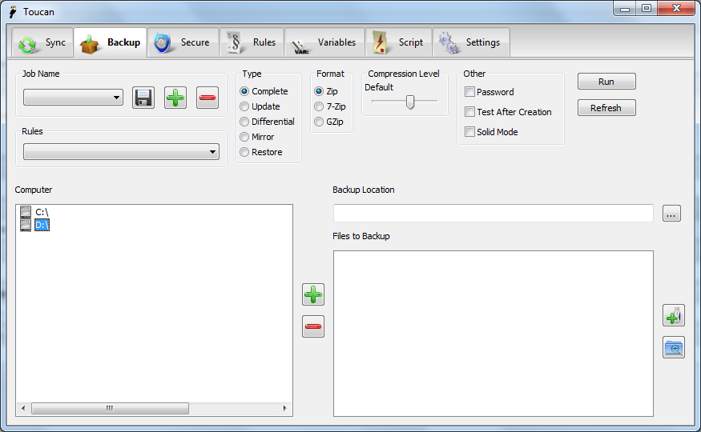

Backup¶
Overview¶
Backup is used to create a single archive from a collection of files and folders. The archive can be in one of two different formats, and a number of backup methods are available, as are a number of levels of compression. These range from uncompressed if you simply wish to collect a number of files together to ultra, which although it takes a long time gives maximum compression.
User Interface¶
The Backup tab is roughly split into three sections. Along the top are the controls for the backup, the standard jobs area, the standard rules area and other settings for the backup. On the left hand side below these settings if the computer browser. Here you can select which files to backup. On the right there are two main areas. Firstly is the backup location selector, this is where you can select the location of the archive to create. Below this is the file list. Once you have added files from the computer browser they appear here so you can easily see what will be backed up. Using the buttons on the right hand side you can also add Variables and expand all of the folders you have selected. The file list is automatically coloured using any Rules you might have selected.

Function¶
- Complete
- This backs up all of the files you have added in the File List to the location specified in the Backup Location.
- Update
- This adds newer files from your File List to the Backup Location.
- Differential
- On its first run a base file is created in the folder specified in the Backup Location. In subsequent runs changes files are backup up in an archive named after the date and time. To restore a differential backup you need to restore the base file and then the most recent date file. Currently this only supports one source folder. Please note that if you delete a file from the source folder and you use the 7z format, 7-Zip will create a so-called “anti-item” in the differential backup, a file with the same name and zero size, which will ensure that the item from the base backup is deleted upon unpacking, reflecting the reality.
- Restore
- Restores files from an archive into a folder. This works the other way on to other the main functions, you add the files to the file list and they are extracted into the folder specified. Currently this only supports one source file.
- Mirror
This one is somewhat similar to Update, however it strives to exactly mirror the changes in the source files/folders into the Backup Location. Specifically, the following 7-Zip options are used: “-up1q0r2x1y2z1w2”. Below are details about archive and file actions that translates into.
State condition Action File exists in archive, but is not matched with wildcard File copied from old archive to new File exists in archive, but doesn’t exist on disk File ignored, not added to the new archive File doesn’t exist in archive, but exists on disk File added from disk to new archive File in archive is newer than the file on disk File is copied from old archive to new File in archive is older than the file on disk File is added from disk to new archive File in archive is same as the file on disk File is copied from old archive to new Can not be detected what file is newer (times are the same, sizes are different) File is added from disk to new archive
Format¶
Toucan supports three formats currently, they are:
- Zip
- An industry standard format with average compression levels and speed. It is ideal to use when you are taking archives to other computers as many operating systems have support for zip archives built in.
- 7-Zip
- An improved format developed by Igor Pavlov. It is normally both faster and its archives are smaller than Zip archives. However support is much rarer.
- GZip
- When this mode is selected files are firstly added to a tarball before being gzipped. This format is normally used for Linux archives.
Compression Level¶
Six levels of compression are supported, from no compression to ultra compression. Each increment reduces the size of the final archive but takes more time to produce. Please note that ultra many take a very long time, especially if you are backing up large numbers of files.
Other¶
- Password
- When this is enabled you will be prompted for a password at the start of the job. Toucan uses the standard encryption systems for both Zip and 7-Zip archives.
- Test After Creation
- After the archive is created a test command is run to ensure the integrity of the archive.
- Solid Mode
- This options is only valid for 7-Zip archives. It gives an improved compression ratio at the cost of potentially corrupting a larger part of the archive if there is an issue.
Preview¶
Whenever you add new items to a backup job they will automatically be previewed and so either be left black, so show they will be included in the job, or red to show that they have been excluded.